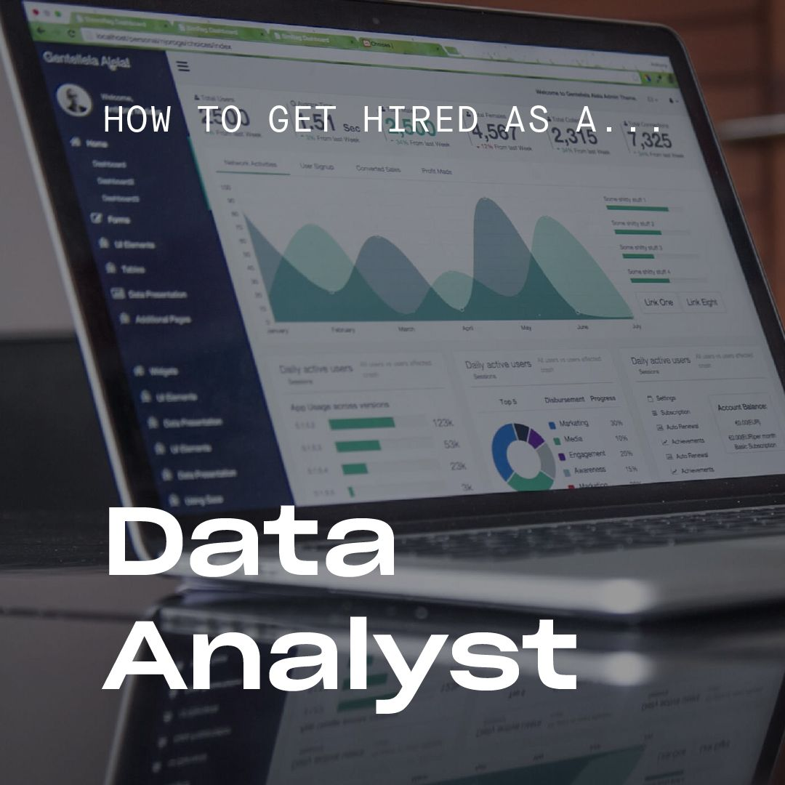
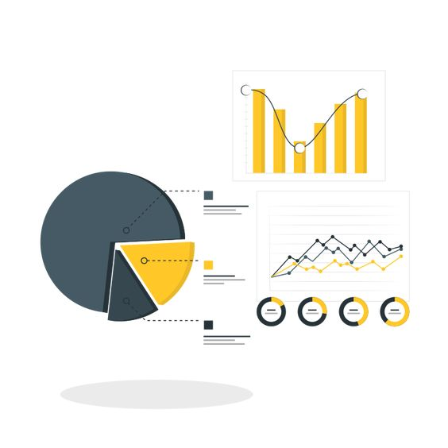

I conducted a personal project focused on exploring the Data Analyst/Science job market in AFRICA.
I Utilized Python to analyze data science/Analyst job listings and gain insights into the requirements for analytics roles.
Implemented Regex techniques to extract key requirements from job descriptions.
Employed pandas, matplotlib and wordcloud to aggregate and visualize the data, creating a professional report.
This project provided valuable insights into the emerging trends, popular tools, and in-demand skills in the African Data job market.
The aim was to provide meaningful insights for job seekers like myself and employers.

In this project, I undertook the task of making housing data more suitable for analysis by utilizing SQL Server. By employing various data cleaning techniques, such as standardizing dates, filling missing addresses, splitting address fields, converting values, and removing duplicates, I transformed the raw housing dataset into a clean and organized format. This process ensured that the data was optimized for analysis, enabling efficient and accurate insights to be extracted
Experience the power of data visualization through my Tableau Public profile. Explore captivating dashboards and visualizations that demonstrate my expertise in transforming complex data into insightful narratives. From sales performance analysis to market trends, my Tableau visualizations showcase my data analysis and storytelling skills. Discover hidden patterns, gain valuable insights, and experience the impact of visual storytelling.

In this sales analysis project,
I begin by meticulously cleaning the data, removing NaN values, eliminating rows based on specific conditions
and transforming column types. Once the data is cleansed, I delve into the exploration phase,
addressing five key business questions.
These include identifying the best month for sales and its corresponding revenue,
pinpointing the top-selling city, determining the optimal timing for effective advertisements,
analyzing frequently co-purchased products, and identifying the best-selling product and its contributing factors.
To answer these questions,
I employ pandas and matplotlib methods such as concatenating CSVs, adding columns, parsing strings,
applying functions, using groupby for aggregate analysis, and visualizing results with bar charts
and line graphs while ensuring clear labeling for enhanced understanding. Throughout this project,
I maintain a high level of professionalism and attention to detail to derive meaningful insights
and deliver actionable recommendations.
This analysis offers a unique opportunity to witness the evolution of data and trends over the past three years, providing a valuable perspective on the ever-changing landscape of the global health crisis.
This report investigates the risk of default of Safaricom PLC on its bonds by looking at its credit spread.
The aim of the project is to use the Merton’s Model to model the market value of the company’s security,
to estimate the probability of default on debt and to calculate the credit spread.
The model has an appealing feature of connecting credit risk
to underlying variables providing an intuitive economic interpretation
and a lengthy explanation of credit defaults.
The discussion focuses on helping corporate entities in developing
and improving on their credit spread policies and financial structures.
Bond market investors can also use its derivatives to come up with hedging strategies.
In conclusion, this study aims at helping investors make informed decisions regarding
their investments by maximizing profits and incurring minimum or no losses.
Recently due to COVID 19 and the state Economy,
the Kenyan financial sector has witnessed the collapse of firms due to their inability to meet their financial
and legal debt obligations.
Therefore, it is crucial to price this corporate debt to avoid losses caused by default.
This my final year school project, I'm working towards publishing it.
In this project, I embarked on an exciting exploration of a movie dataset, uncovering intriguing insights through a series of steps. Starting with the dataset download, I ensured access to comprehensive movie information. Then, I acquired a Python IDE for seamless coding and analysis. With the aid of essential Python libraries, I imported the necessary tools for data manipulation and visualization. Utilizing the power of Pandas, I successfully read in the movie data, facilitating thorough exploration. Detecting and addressing missing data played a pivotal role in ensuring accurate analysis. Finally, I delved into the dataset, revealing captivating correlations that shed light on fascinating relationships within the movie industry.